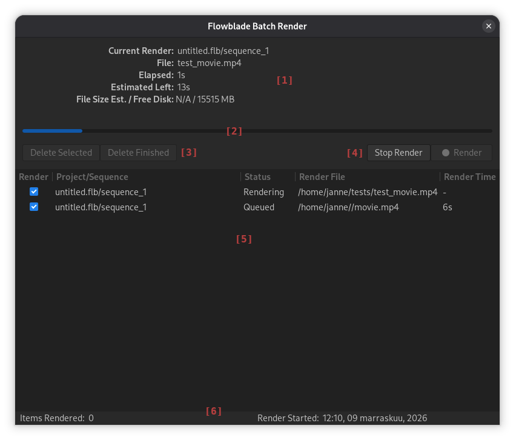

Flowblade provides a dedicated Batch Render Queue application. It runs as a separate process from Flowblade, allowing you to close Flowblade without affecting ongoing renders.
The render queue is stored on disk and persists between application sessions. Each render item consists of a Project file and its associated render settings. You can add items to the queue and then render the entire queue without further user interaction.
Batch Render Window

[1] Current Active Render Info
- Current Render. Displays the Project and Sequence currently being rendered.
- Estimated Left. Estimates the remaining rendering time based on the percentage of the Sequence already rendered and the elapsed time.
- File Size Est./Free Disk. The estimated file size is displayed after 25% of the Sequence has been rendered, allowing for a more accurate estimation. A warning is displayed if the estimated file size exceeds 90% of the available free disk space.
[2] Render Progress Bar.
[3] Delete Buttons. Buttons for removing selected render items or all finished items from the queue.
[4] Render Buttons. Buttons for starting and stopping queue rendering.
[5] Render Items Table.
- Render checkbox. Only active items are rendered when the queue is processed. Inactive items are skipped.
- Project/Sequence Info. Only visible when rendering arguments are enabled.
- Status. Indicates the current status of the render item: Rendering, Queued or Finished.
- Render File. Displays the full path of the rendered file.
- Render Time. Displays the time taken to render the item.
[6] Current Render Run Info. Displays the number of items rendered during the current render session and the time when rendering started.
Workflow
Adding Items to Batch Render Queue
- Use the Render Panel to configure the encoding, format and other render properties. See the Rendering chapter for more information.
- Press the To Queue button in the Render Panel to add a new item to the render queue and launch the Batch Render Queue application.
- Alternatively, select Render > Add to Batch Render Queue... from the application menu.
Using Batch Render Queue Application
- Open the Batch Render Queue application by selecting Render > Batch Render Queue from the application menu.
- Prepare the render queue:
- Use the Delete Selected and Delete Finished buttons to remove items from the queue that are no longer needed.
- Use the checkboxes in the Render column to select which items will be rendered.
- Press the Render button to start processing the queue.
Render Item Context Menu Actions
- Save Item Project As... Saves the Project file associated with the render item under a new file name.
- Render Properties Displays the render settings that were saved when the item was added to the queue.
- Delete Removes the render item from the queue.